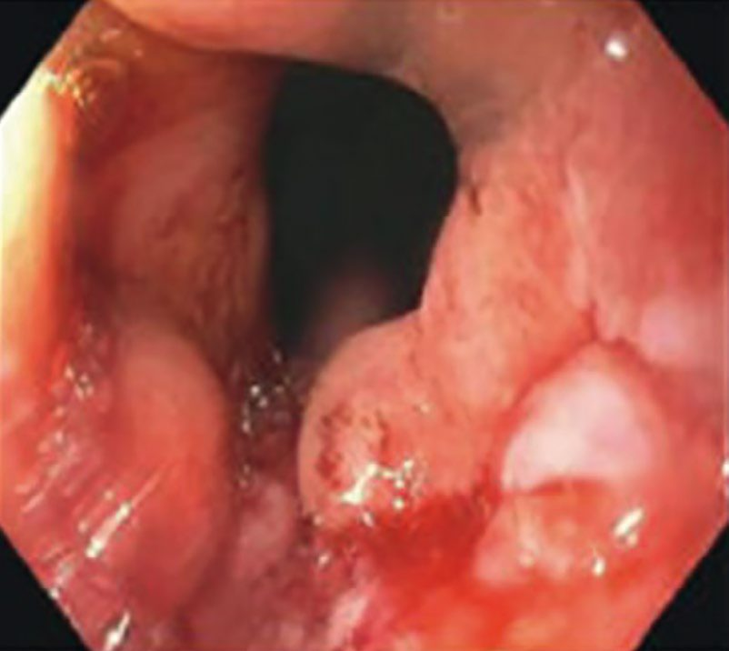
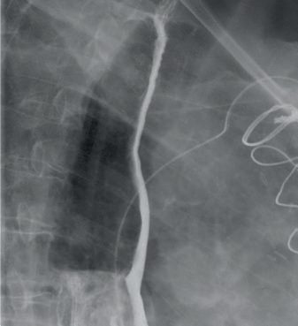
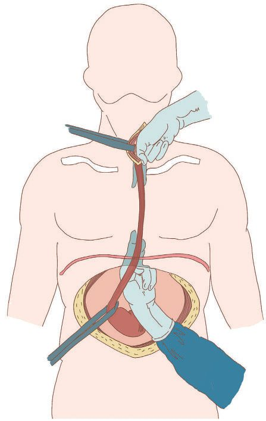
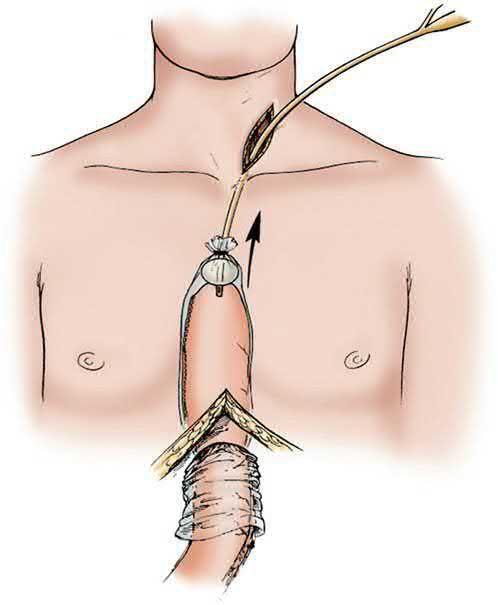

Esophageal Cancer
Summary
- Oesophageal cancer is the eighth most common cancer worldwide and the sixth most common cause of cancer death, most commonly presenting in the sixth and seventh decades of life [1].
- Squamous cell carcinoma and adenocarcinoma are the two dominant histological types, with a marked epidemiological shift in Western countries since the 1990s from squamous cell carcinoma to adenocarcinoma, the latter now surpassing the former in incidence [1].
- Overall prognosis is poor, driven by late presentation and early lymphatic/systemic spread, but early diagnosis and R0 resection offer the best chance of cure [1].
Definition
Oesophageal tumours are almost always malignant, with early invasion of regional nodes and rapid submucosal lymphatic spread, so disease is often advanced at diagnosis [2]. The two principal histological types are squamous cell carcinoma, predominant worldwide and typically found in the cervical/upper two-thirds of the oesophagus, and adenocarcinoma, now the number one esophageal cancer in the West, usually arising in the lower third from Barrett's metaplasia [2][3].
Pathophysiology
- Both squamous cell and adenocarcinoma arise from dysplastic mucosa; most adenocarcinomas are mucin-producing with intestinal-type features [1].
- The oesophageal wall has a dense submucosal lymphatic plexus that runs longitudinally, with about six times more longitudinal than transverse spread on contrast injection studies, meaning free tumour cells can extend a considerable distance along the submucosa before penetrating the muscularis into regional nodes; in the upper two-thirds flow is mainly cephalad, in the lower third mainly caudad [3].
- The cervical oesophagus has more direct segmental drainage into regional nodes, giving cervical lesions less submucosal spread but more regionalized lymphatic spread [3].
- Both cell types can directly invade adjacent structures depending on location, trachea/bronchi (haemoptysis, airway obstruction, oesophago-airway fistula), aorta (rare aorto-oesophageal fistula), diaphragmatic crura, or pericardium [1].
- Distant haematogenous spread occurs to non-regional nodes, lungs, liver, brain, and bone; peritoneal metastasis is an important spread route for OGJ adenocarcinoma but rare for squamous cell cancer [1].
- Adenocarcinoma classically metastasizes to the liver first; squamous cell carcinoma classically metastasizes to the lung first [2].
Clinical features
- Progressive dysphagia, initially for solids then progressing to a soft and eventually liquid diet, is the most common symptom, reflecting increasing luminal obstruction [1][2].
- Anorexia, weight loss, odynophagia, and regurgitation are also common [1].
- Hoarseness may indicate recurrent laryngeal nerve involvement; choking and cough on drinking water suggest an oesophago-airway fistula, often with associated haemoptysis [1].
- Chronic blood loss can cause iron-deficiency anaemia; acute bleeding is rarely severe except for aorto-oesophageal fistula, which classically presents with a small sentinel bleed followed by fatal massive haemorrhage [1].
- Early cancers are usually asymptomatic and detected incidentally at endoscopy except where a screening programme exists [1].
- Signs of unresectability/advanced disease include recurrent laryngeal nerve paralysis (hoarseness), Horner syndrome (brachial plexus invasion), persistent spinal pain, phrenic nerve invasion, malignant pleural effusion, and malignant fistula [2][3].
Etiology
- Aetiological factors differ by histological subtype [1].
- Squamous cell carcinoma risk factors include smoking, alcohol (with a genetic component, aldehyde dehydrogenase 2 [ALDH2] deficiency, common in East Asians, leads to acetaldehyde accumulation), hot beverages, N-nitroso-containing foods (pickled vegetables), betel nut chewing, yerba mate consumption, dietary deficiency of fresh fruit/vegetables and micronutrients, low socioeconomic status, history of mediastinal radiation, lye corrosive stricture, prior upper aerodigestive malignancy, Plummer-Vinson syndrome, and achalasia [1].
- Risk factors for squamous cell carcinoma per the ABSITE Review include alcohol, tobacco, achalasia, caustic injury, nitrosamines, and male sex [2].
- Adenocarcinoma is strongly associated with GERD, obesity, and Barrett's oesophagus, and its rising incidence parallels rising obesity and GERD/Barrett's prevalence in Western populations; GERD affects up to 44% of the US population, of whom 5–8% develop Barrett's oesophagus, with an estimated 0.2–0.5% per year rate of neoplastic transformation [1][3].
- Patients with other aerodigestive malignancies carry particularly high risk from shared environmental carcinogen exposure; roughly 10% of oesophageal cancer patients have multiple primary cancers, 70% of these in the aerodigestive tract [1].
- Tylosis (RHBDF2 mutation, autosomal dominant, with palmoplantar hyperkeratosis) carries a 70% lifetime risk of squamous cell oesophageal cancer, warranting endoscopic screening from age 20; Fanconi anaemia also predisposes to squamous cell carcinoma of the oral cavity and oesophagus [2].
Diagnosis
- Barium contrast study may show an ulcerated or stenotic lesion with proximal dilatation; endoscopy visualises the tumour and allows biopsy or brush cytology [1].
- For early squamous dysplasia/cancer, chromoendoscopy with Lugol's iodine (normal mucosa stains brown, dysplastic/cancerous mucosa remains unstained) and narrow-band imaging with the intraepithelial papillary capillary loop (IPCL) classification aid detection [1].
- Assessment of the rest of the oesophagus, pharynx, and larynx (including vocal cord movement) is needed to exclude synchronous tumours; bronchoscopy is required for mid/upper oesophageal tumours near the airway to exclude airway invasion, which would contraindicate oesophagectomy [1].
- Endoscopic ultrasound (EUS) is the most accurate test for assessing T stage, distinguishing the oesophageal wall layers (5 alternating hyper/hypoechoic layers), with average accuracy of 85% for T stage and 75% for N stage; EUS-FNA obtains cytological confirmation of suspicious nodes [1][3].
- CT chest/abdomen is the best single test for assessing resectability and detecting distant nodal/metastatic disease, though it is less accurate than EUS for local nodal staging [1][2].
- PET-CT detects regional/distant metastases and has prognostic value based on FDG uptake and response to neoadjuvant treatment, though it cannot define oesophageal wall layers for T staging; squamous cell cancers are usually FDG-avid, while OGJ adenocarcinomas may show limited FDG uptake regardless of tumour volume [1].
- Diagnostic laparoscopy is useful for staging adenocarcinoma, especially at the OGJ, but not for squamous cell cancer [1].
- Preoperative FEV1 is the pulmonary function test most heavily correlated with ability to tolerate esophagectomy; FEV1 <1.25 L confers a 40% four-year risk of death from respiratory insufficiency, and observed stair-climbing (three flights without stopping) is a practical bedside surrogate for cardiopulmonary reserve [3].


Scoring and Severity
- TNM staging (AJCC/UICC 8th edition): T1a (lamina propria/muscularis mucosae), T1b (submucosa), T2 (muscularis propria), T3 (adventitia), T4a (pleura, pericardium, azygos vein, diaphragm, or peritoneum), T4b (aorta, vertebral body, or airway); N1 (1–2 nodes), N2 (3–6 nodes), N3 (≥7 nodes); M0/M1 [1].
- Tumours with an epicentre within 2 cm of the cardia are staged as oesophageal; those with an epicentre >2 cm distal to the GOJ are staged as gastric [1].
- Cervical (up to 5 cm below the cricopharyngeus) and EGJ tumours (up to 5 cm below the EGJ) are staged and treated similarly to thoracic oesophageal cancer [2].
- Nodal disease outside the field of resection (supraclavicular or coeliac nodes) is considered M1 disease and a contraindication to esophagectomy [2].
- Tumour length is prognostic: tumours >8 cm should generally be excluded from curative resection, those <4 cm have the most favourable features, and nodal spread is the single most important prognostic factor in patients without systemic metastases [2][3].
Treatment and Management
- Treatment is stage-directed and determined by multidisciplinary team discussion; when distant metastatic disease is present, palliation is the goal [1].
- Endoscopic mucosal resection (EMR) and endoscopic submucosal dissection (ESD) are curative options for very early cancers confined to the mucosa (T1a, low nodal risk); T1b (submucosal) tumours, especially squamous, carry substantial nodal metastasis risk and are less suited to endoscopic-only treatment [1].
- High-grade dysplasia, carcinoma in situ, and select T1a tumours (<2 cm, well/moderately differentiated, node-negative) can be managed by endoscopic resection alone; T1b or greater generally requires esophagectomy if resectable [2].
- Neoadjuvant chemoradiotherapy improves survival for resectable tumours and can downstage initially unresectable tumours; it is indicated for ≥T2 tumours or node-positive periesophageal disease, and adjuvant chemotherapy also improves survival [2].
- Unresectable tumours receive definitive chemoradiotherapy; cervical oesophageal cancer is generally treated with definitive chemoradiotherapy rather than surgery, reserving surgery for non-complete responders or salvage [1][2].
- Palliative radiation for dysphagia provides only short-lived benefit, typically lasting 2–3 months, and is reserved for patients who are not surgical candidates, often combined with chemotherapy; radiation is also effective for haemorrhage from the primary tumour [3].
- Malignant tracheoesophageal fistula carries a grim prognosis (death within 3 months from aspiration in most cases), and palliative treatment is esophageal stenting [2].
Surgeries
- The primary goal of surgery is R0 resection (clear proximal, distal, and lateral margins), consistently associated with the best long-term survival [1].
- Surgical approaches include: left thoracoabdominal incision; the Lewis-Tanner (Ivor Lewis) two-phase approach (laparotomy for gastric mobilisation, then right thoracotomy for oesophageal resection and intrathoracic anastomosis); the McKeown or three-stage (three-hole) oesophagectomy (right thoracotomy, then abdominal and neck incisions for a cervical anastomosis); the left thoracic (Sweet) approach; and transhiatal esophagectomy (cervical and abdominal incisions, blunt mobilisation of the intrathoracic oesophagus without thoracotomy, cervical anastomosis) [1][2].
- Transhiatal esophagectomy may have lower morbidity from anastomotic leaks given the cervical anastomosis but may miss some lymph nodes and can be difficult for large tumours, while limiting adequate mediastinal nodal dissection [1][2].
- Minimally invasive (VATS/laparoscopic or robotic) approaches are increasingly replacing open surgery, with anastomosis constructed in the chest or neck; the most common complications of an MIS three-field esophagectomy in order are pneumonia, atrial fibrillation, then anastomotic leak [1][3].
- Reconstruction is most commonly with a gastric conduit (right gastroepiploic artery blood supply, dividing left gastric and short gastric vessels), and requires a pyloromyotomy/pyloroplasty; colonic interposition (right ileocolon, or left/transverse colon) is used when the stomach is unavailable, requiring three anastomoses and useful in young patients wishing to preserve gastric function or those with prior gastric resection [1][2].
- Lymphadenectomy extent is described by "fields": two-field (mediastinum plus upper abdomen/coeliac trifurcation) with standard/extended/total mediastinal sub-classifications based on paratracheal and recurrent laryngeal nerve nodal dissection, and three-field dissection adding bilateral cervical lymphadenectomy, generally favoured for squamous cell cancers and selected upper thoracic tumours given the propensity for bilateral recurrent laryngeal nerve nodal metastasis [1].
- Esophagectomy requires 6–8 cm margins per the ABSITE Review [2].
- Leiomyoma, the most common benign oesophageal tumour, is treated by enucleation preserving the mucosa [3].


Complications
- Atelectasis and pneumonia are common and managed with chest physiotherapy, analgesia, and antibiotics; atrial fibrillation occurs in around 15–20% of patients and, while usually benign, may signal an underlying complication such as anastomotic leak or conduit ischaemia and should prompt investigation [1].
- Recurrent laryngeal nerve injury occurs with superior mediastinal or neck nodal dissection, causing hoarseness, less effective coughing, and aspiration risk [1].
- Gross conduit ischaemia typically presents within 2–3 days postoperatively and may require takedown, drainage, and staged reconstruction [1].
- Anastomotic leaks (thoracic or cervical) usually present within the first week with sepsis and abnormal drain output, diagnosed by water-soluble contrast study or careful endoscopy; small contained leaks may be managed with CT-guided drainage or an endoluminal vacuum sponge, while larger septic leaks require exploration; a postoperative contrast study is often obtained around postoperative day 7 to check for leak [1][2].
- Chylothorax presents as milky/clear, lymphocyte- and triglyceride-rich chest drainage; low-output leaks (<0.5–1 L/day) are managed conservatively (NPO, TPN, medium-chain triglyceride diet) for 1–3 weeks, while output >1–2 L/day or persistent leaks warrant thoracic duct ligation (low, right-sided in the mediastinum) or percutaneous embolization [1][2].
- Postoperative strictures can generally be managed with endoscopic dilation [2].
- Overall surgical mortality is under 5% in dedicated high-volume centres [1][2].
Prognosis
- Overall prognosis remains poor, largely due to late presentation and early metastatic spread [1].
- Esophagectomy is curative in only about 20% of resected patients per the ABSITE Review [2].
- With modern multimodality treatment (surgery plus neoadjuvant/adjuvant chemo- or chemoradiotherapy), a 5-year survival rate of 40–50% is achievable; disease stage and the ability to achieve R0 resection are the most powerful outcome predictors [1].
- Nodal spread is the most important prognostic factor in patients without systemic metastases [2].
- Tumours >8 cm in length essentially preclude curative resection [3].
References
- Bailey & Love's Short Practice of Surgery, 28th ed., Ch. 66, per the 8th edition; the Oxford Handbook similarly notes a proximal-2cm cutoff
- The ABSITE Review, 2022, Ch. Esophagus, citing about 5% mortality
- Schwartz's Principles of Surgery: ABSITE and Board Review, Ch. 25, The Esophagus and Diaphragmatic Hernia
- Sabiston Textbook of Surgery, 22nd ed., Ch. 84
- Bailey & Love's Short Practice of Surgery, 28th ed., Ch. 8
- Maingot's Abdominal Operations, 13th ed., Ch. 27